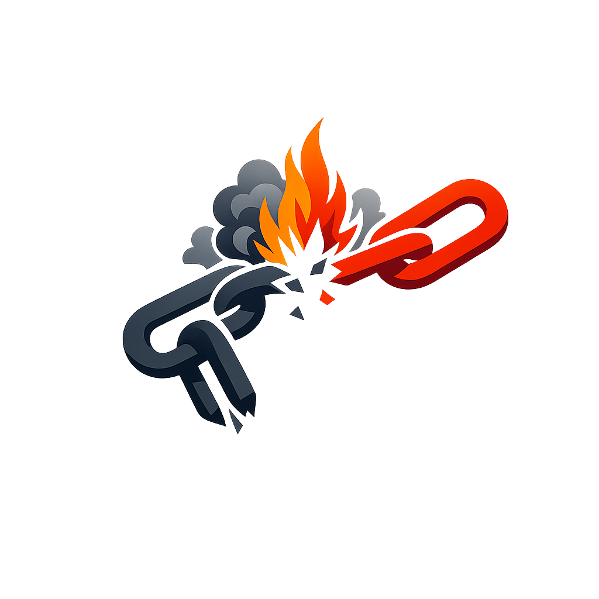

The Authentic Orthography
Doom of the Gods · Twilight of the gods (from ragna + rǫk)

Why Ragnarǫk.com is the correct form
ᚱᛅᚴᚾᛅᚱᚢᚴ
The name in its original Norse form. Ragnarǫk (ᚱᛅᚴᚾᛅᚱᚢᚴ) is attested as doom of the gods — “Twilight of the gods (from ragna + rǫk)”. Its original diacritics and script distinctions carry the full phonetic and orthographic weight of the source tradition.
ragnarok
Reduced to plain ragnarok, the name loses everything that made it specific: original diacritics and script distinctions. What remains is an ASCII string that machines can parse but that no longer speaks with its original voice.
Ragnarǫk
The Unicode restoration recovers what ASCII flattened. Ragnarǫk restores original diacritics and script distinctions, returning the name to its original written dignity. The domain encodes to Punycode, but the browser displays the truth.
Ragnarǫk.com → xn--ragnark-fnc.com
The non-ASCII characters in Ragnarǫk are encoded while the ASCII remains visible. To the DNS, it is Punycode. To humanity, it is Ragnarǫk.
How Ragnarǫk travels from ancient script to scholarly transliteration
How Ragnarǫk was spoken
The domain of Ragnarǫk
In the norse tradition, Ragnarǫk governed doom of the gods. The name encodes a sphere of power that shaped ritual, narrative, and social order.
undefined
undefined
Stories of Ragnarǫk
Ragnarǫk is the doom of the gods, the final destruction and renewal of the cosmos foretold in the Poetic Edda and elaborated by Snorri. It begins with fimbulvetr, three winters with no summer, followed by the breaking of bonds: the wolf Fenrir slips his chains, the serpent rises from the sea, and Loki sails a ship of nails from the dead. The gods gather on Vígríðr, but even their courage cannot prevent the sun from darkening, the stars from falling, and the world-tree from trembling. Ragnarǫk is not pure annihilation; after the destruction, the earth rises again, green and fertile. Baldr and Hǫðr return, a human pair named Líf and Lífþrasir repopulate the world, and the sun's daughter takes her mother's place. The myth therefore encodes a Norse theology of cosmic renewal as well as ending.
On the plain Vígríðr, the forces of chaos meet the Æsir in the last battle. Fenrir swallows Óðinn, who is avenged by his son Víðarr; Þórr slays the Miðgarðsormr but staggers nine paces and dies of its venom. Surtr's fire spreads across the world, and the earth sinks into the sea.
The battle is not a simple victory of good over evil but the collapse of an entire cosmic order. Every pairing of enemies is also a pairing of fated kin: gods and giants are descended from the same primordial matter, and their mutual destruction clears the ground for whatever comes next.
After the fire subsides, the earth rises again from the sea, green and fertile. The surviving gods Höðr and Baldr return from Helheimr, and a few gods gather at Iðavöllr where Ásgarðr once stood. Two human beings, Líf and Lífþrasir, have hidden themselves in Hoddmímis holt and now emerge to repopulate the world.
Ragnarǫk is therefore not only an ending but also a concealed beginning. The destruction is total, yet memory, seed, and divine lineage survive. The myth gives the Norse cosmos a cyclical dimension without softening the terror of the flame: the new world is born from the ashes of the old.
The doom does not arrive unannounced. First comes fimbulvetr, three successive winters with no summer between, severing the bonds of kinship. Then the wolf Sköll catches the sun and Hati the moon; the earth trembles, trees uproot, and the great chain Gleipnir strains as Fenrir wakes. Heimdallr, watchman of the gods, finally sounds Gjallarhorn, and the Æsir hold their last council before marching to Vígríðr.
Names are not merely labels; they are compressed worlds. Ragnarǫk carries within it a norse understanding of twilight of the gods (from ragna + rǫk). Unicode restoration returns that world to readable form.
Enter Extended Lore